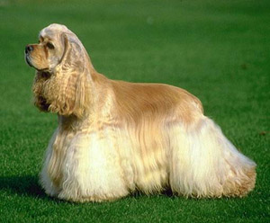
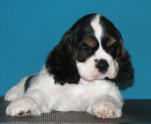

<table border="0" class="layout">
    <colgroup span="1" style="text-align: left;"><col width="15%" span="1" style="text-align: left;"></col><col width="25%" span="1" style="text-align: left;"></col><col width="60%" span="1" style="text-align: left;"></col></colgroup> 
    <tbody style="text-align: left;">
        <tr style="text-align: left;">
            <td style="text-align: left;">
                <div class="holster">
                    <div class="block_container s3 b-image txt-center" id="e_1282639493361"></div>
                    <div class="block_container s3 b-image txt-center" id="e_12826395090"></div>
                    <div class="block_container s3 b-image txt-center" style="text-align: center;"></div>
                    <div class="block_container s3 b-image txt-center" style="text-align: center;">Наши заводчики:</div>
                    <div class="block_container s3 b-image txt-center" style="text-align: center;"></div>
                    <div class="block_container s3 b-image txt-center" style="text-align: center;"><strong>Евграшина Елена - </strong></div>
                    <div class="block_container s3 b-image txt-center" style="text-align: center;"><span style="font-size: 8pt;">добро пожаловать к нам:</span></div>
                    <div class="block_container s3 b-image txt-center" style="text-align: center;"><a href="http://kounsshow.narod.ru/"><strong>"Коун`с Шоу"</strong></a></div>
                    <div class="block_container s3 b-image txt-center" style="text-align: center;"></div>
                    
                </div>
            </td>
            <td style="text-align: left;">
                <div class="holster">
                    <div class="block_container s3 b-text b-static-text user_css_128160066548" id="e_128263622865">
                        <p style="text-align: justify;"><strong><span style="color: #ff0000;">Американский коккер-спаниель</span></strong></p>
                        <div class="block_container s3 b-text b-static-text user_css_128160066548" id="e_128263622865"><span style="color: #3366ff;"><strong>ХАРАКТЕР</strong> Понятливая, держится несколько отчужденно, но в это же время привязчива, в целом добродушна.</span></div>
                        <div class="block_container s3 b-text b-static-text user_css_128160066548"><span style="color: #3366ff;"><br /></span></div>
                        <div class="block_container s3 b-text b-static-text user_css_128160066548"><span style="color: #3366ff;"><strong>ВНЕШНИЙ ВИД</strong> Лоб скругленный, выпуклый, глаза круглые, смотрят прямо вперед, линяя  спины несколько понижается от плеч до хвоста. </span></div>
                        <p><span style="color: #3366ff;"><strong>ШЕРСТЬ</strong> На голове - короткая и мягкая, на туловище - средней длины, с довольно густым подшерстком</span></p>
                        <p><span style="color: #3366ff;"><strong>ОКРАС</strong> Черный, черный или коричневый с рыжевато-коричневым подпалом. пятнистый или трехцветный. <br /></span></p>
                        <p><span style="color: #3366ff;"><strong><br /></strong></span></p>
                        <p><span style="color: #3366ff;"><strong>РАЗМЕРЫ</strong> Рост кобеля 35-38 см., суки 63 см. Вес кобели 27 кг., суки 23кг.</span></p>
                        <p><span style="color: #3366ff;"><strong>УХОД</strong> За шерстью необходим постоянный уход</span></p>
                        <p><span style="color: #3366ff;"><strong><br /></strong></span></p>
                    </div>
                </div>
            </td>
        </tr>
    </tbody>
</table>​
